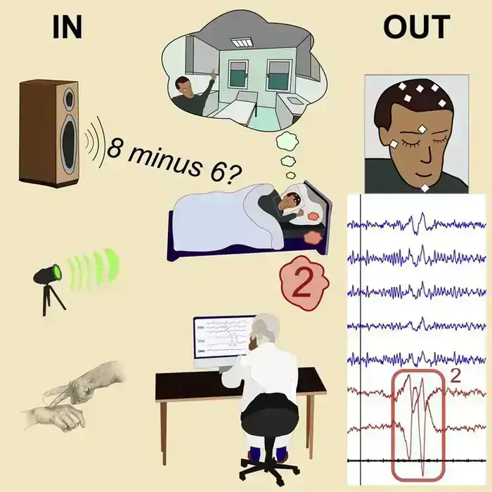

The claim, and the problem with it
A lucid dream is one in which the dreamer knows they are dreaming. The report is entirely first-person, from a state in which the reporter cannot move, and dreams are notoriously unreliable to recall. For most of the twentieth century the claim was therefore untestable, and mostly dismissed.
Maps, diagrams and images


The verification
In 1980 Stephen LaBerge and colleagues found the way through. During REM sleep the eye muscles are not paralysed, so a sleeper can move their eyes voluntarily. They agreed a code in advance: look left-right-left-right for a signal, or move the eyes in a pattern counting from one. Sleepers in verified REM produced the agreed pattern from inside the dream, and reported a lucid dream on waking.
The technique has been repeated many times since, and extended: lucid dreamers have been asked to perform a sequence of eye movements corresponding to a physical task, and their breathing or muscle twitches timed against it. The phenomenon is real and the method is sound.
How common, and whether it can be trained
About half of people report at least one lucid dream; roughly a fifth report them monthly or more. Several techniques claim to increase the rate — reality testing during the day, waking after five hours and returning to sleep with the intention to notice (MILD, WBTB), and external stimulation. A meta-analysis of the induction studies found effects that are real but modest, and the studies are small, which is the usual caveat in this literature.
Documented: lucid dreaming occurs, is verifiable by pre-agreed eye signals during REM, and can be induced with training, weakly.
Not the same as dream control: knowing you are dreaming and being able to change the dream are different abilities, and the second is much less reliable.
Not established: the therapeutic claims. Lucid dreaming has been trialled for nightmares with promising early results, and for other conditions with much weaker evidence.
Not established: that it is a doorway to anything other than a dream.
Why it is in the archive
Because it is the clean case of a claim that sounded mystical, was dismissed as such, and turned out to be checkable by anyone with a sleep lab and a cooperative volunteer. The archive files it as documented and notes how thin the popular literature on it still is.
Open resources on this topic
- BookDreaming wide awake : lucid dreaming, shamanic healing, and psychedelics — Brown, David Jay, author · 2016 (Internet Archive, free to read)
- BookLucid Dreaming Charlie Morley (Internet Archive, free to read)
- BookLucid Dreaming — magmacubes (Internet Archive, free to read)
- PapersOpen-access articles: DOAJ · PubMed Central · Internet Archive Scholar
- BooksPublic-domain and borrowable copies: Open Library · Project Gutenberg · Google Books
More images
Cite this page
Momin, S. (2026). Lucid Dreaming. The Larger World Archive. https://drsamonline.github.io/LARGE_GLOBE/lucid-dreaming.htmlMomin, Sohil. “Lucid Dreaming.” The Larger World Archive, 2026, https://drsamonline.github.io/LARGE_GLOBE/lucid-dreaming.html.Momin, Sohil. “Lucid Dreaming.” The Larger World Archive, 2026. https://drsamonline.github.io/LARGE_GLOBE/lucid-dreaming.html.@misc{lucid2026lucid,
author = {Momin, Sohil},
title = {Lucid Dreaming},
year = {2026},
howpublished = {The Larger World Archive},
url = {https://drsamonline.github.io/LARGE_GLOBE/lucid-dreaming.html},
note = {Last reviewed 20 November 2026}
}Last reviewed 20 November 2026 · Corrections policy · this page is not peer reviewed
Sources for this page
- Wikipedia, “Lucid dream” — history, verification and inductionen.wikipedia.org
- LaBerge et al. (1981), Perceptual and Motor Skills — the eye-signal methoddoi.org
- Stumbrys et al. (2012), Consciousness and Cognition — meta-analysis of inductiondoi.org
- Wikipedia, “Rapid eye movement sleep” — why the eyes are the channelen.wikipedia.org